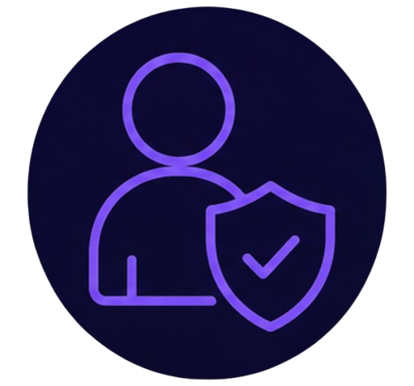
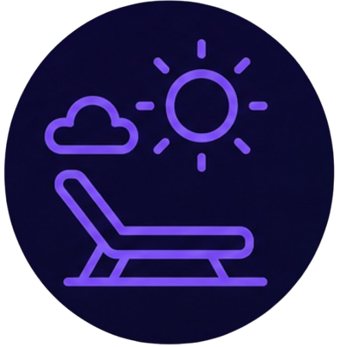
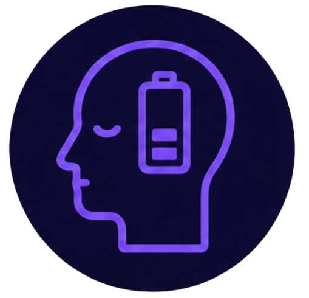
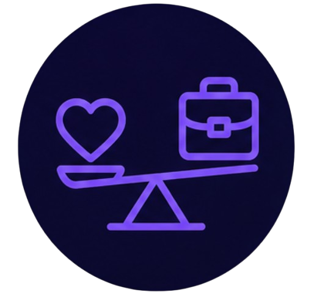

Guía: Límites de uso de apps
Establecer límites de uso para las aplicaciones es una de las estrategias más efectivas para recuperar el control sobre tu tiempo digital. Estas herramientas te ayudan a ser consciente de cuánto tiempo pasas en cada app y te alertan cuando superas tus propios límites, fomentando un uso más equilibrado y saludable.
Beneficios de establecer límites

Mayor autocontrol
Te ayuda a ser consciente de tus hábitos y a tomar decisiones más intencionales.

Más tiempo libre
Liberas horas que puedes dedicar a actividades más significativas y enriquecedoras.

Menos fatiga mental
Reduces la sobrecarga de información y el agotamiento digital.

Mejor equilibrio
Logras un balance más saludable entre la vida digital y la vida real.
Herramientas para establecer límites
StayFree
Disponible para Android e iOS. Permite establecer límites por app, recibir recordatorios y ver estadísticas detalladas.
Bienestar Digital
Integrado en Android. Muestra el tiempo de uso, desbloqueos y notificaciones. Permite establecer temporizadores de apps y modos de enfoque.
Screen Time
Integrado en iOS. Ofrece límites de apps, tiempo de inactividad, y reportes semanales. Sincroniza entre dispositivos Apple.
Pasos para establecer límites efectivos
Paso 1: Analiza tu uso actual
Durante una semana, revisa tus estadísticas de uso. Identifica qué apps consumen más tiempo y en qué momentos del día tiendes a distraerte más. Esto te dará una base realista para establecer límites.
Paso 2: Define límites realistas
Empieza con límites moderados. Por ejemplo, si usas Instagram 2 horas al día, pon un límite de 1 hora. Si usas YouTube 3 horas, reduce a 1.5 horas. Ajusta gradualmente a medida que te sientas más cómodo.
Paso 3: Configura los límites en tu dispositivo
Usa la herramienta nativa de tu sistema (Bienestar Digital, Screen Time) o descarga StayFree. Establece los límites por app y activa las notificaciones de alerta. Algunas apps permiten bloquear el acceso cuando se alcanza el límite.
Paso 4: Crea espacios libres de tecnología
Define momentos del día sin pantallas (ej. durante las comidas, 1 hora antes de dormir). Configura el "Tiempo de inactividad" en tu dispositivo para bloquear automáticamente las apps en esas horas.
Paso 5: Revisa y ajusta semanalmente
Cada semana, revisa tus estadísticas y evalúa si los límites son adecuados. Si los superas con frecuencia, puede que sean demasiado estrictos; ajústalos gradualmente hasta encontrar el equilibrio perfecto.
Recuerda: Los límites de uso no son castigos, sino herramientas para ayudarte a vivir con más intención. La meta no es eliminar el uso de la tecnología, sino usarla de manera que enriquezca tu vida, no que la consuma. Sé amable contigo mismo y celebra los pequeños progresos.